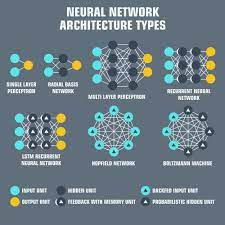

Blog
Neural Networks in Robotics
Shrey GanatraIn recent years, the research of neural networks (NN) has attracted great attention. It is well known that, mammals’ brain, which consists of billions of interconnected neurons, has the ability to deal with complex and computationally demanding tasks, such as face recognition, body motion planning, and muscle activities control.
Robots are basically a human clone, and so all these qualities need to be programmed in a robot. Thus, using Neural Network can bring big changes in the performance of a robot.Also, emerging topics like deep learning, big data, and cloud computing, may be incorporated into the neural network control for complex systems; for example, deep neural networks could be used to process massive amounts of unsupervised data in complex scenarios, neural networks can be helpful in reducing the data dimensionality, and the optimization of NN training may be employed to enhance the learning and adaptation performance of robots.
In this article, we would study some of the very important and basic applications of neural networks in robotics.
What is Neural Network?
A neural network is a series of algorithms that works to recognize underlying relationships in a set of data through a process that mimics the way the human brain operates. In this sense, neural networks refer to systems of neurons, either organic or artificial in nature. Neural networks can adapt to changing input; so the network generates the best possible result without needing to redesign the output criteria.
How does a Neural Network work?
Neural Networks take in data, train themselves to recognize the patterns in the data and then predict the outputs for a new set of similar data. To read a detailed explanation of neural networks, its structure and how the structure works, refer the link. Some of the basic neural networks are as follows:

How Robotics and AI are connected?
There are three different types of robotic programs: remote control, artificial intelligence and hybrid.
A robot with remote control programming has a preexisting set of commands that it will only perform if and when it receives a signal from a control source, typically a human being with a remote control. It is perhaps more appropriate to view devices controlled primarily by human commands as falling in the discipline of automation rather than robotics. Robots that use artificial intelligence interact with their environment on their own without a control source, and can determine reactions to objects and problems they encounter using their preexisting programming.
Hybrid is a form of programming that incorporates both AI and RC functions in them.
Application of NN in Robotics
The basic necessity of a robot is to have a proper dynamics for its movement and to process what comes in its way while its movement. So, we will see how a Neural Network helps to improve these two main problems faced to build a better robot.
1)Predict Robot Dynamics
End-effector performance in industrial robots suffers from the undesired discrepancy between the expected output and the actual system output, known as the model following error. Usually, the complete dynamics to define this discrepancy cannot be modeled accurately due to its complexity and uncertainty. Thus,it is hard to compensate for it by standard model based feedforward control or model based adaptive control techniques. If the robot is to execute repetitive tasks, and the robot repeatability is good, the error information from past iterations/periods can be utilized to reduce the error for the next iteration/period using the learning control techniques, such as iterative learning control (ILC) [1] and repetitive control [2]. For new trajectories, however, the learned knowledge cannot be directly applied and the system has to go through the learning process again to regain its performance, which is undesired in industrial applications.
In industrial applications, this means the production line has to stop for learning, and the overall productivity of the process is compromised. To solve this problem, this paper proposes a learning control scheme based on neural network (NN) prediction. Learning/training is performed for the neural networks for a set of trajectories in advance. Then the feedforward compensation torque for any trajectory in the set can be calculated according to the predicted error from multiple neural networks managed with expert logic.
2)To help Robots navigate.
To begin with, the robots start by sensing the world with radars, a multitude of cameras and ultrasonics.However, the challenge is that most of this knowledge is low-level and non-semantic. For example, a robot may sense that an object is ten meters away, yet without knowing the object category, it’s difficult to make safe driving decisions.
Machine learning through neural networks is surprisingly useful in converting this unstructured low-level data into higher level information.To understand the surrounding environment in real time, a central component to the robot is an object detection module - a program that inputs images and returns a list of object boxes.
In the robot software, we have a set of trainable units, mostly neural networks, where the code is written by the model itself. The program is represented by a set of weights.At first, these numbers are randomly initialized, and the program’s output is random as well. The engineers present the model examples of what they would like to predict and ask the network to get better the next time it sees a similar input. By iteratively changing the weights, the optimization algorithm searches for programs that predict bounding boxes more and more accurately.
But, some of the obstacles faced by the object detection modules are as follows:
Should the model be penalized or rewarded when it detects a car in a window reflection?
What shall it do when it detects a picture of a human from a poster?
Should a car trailer full of cars be annotated as one entity or each of the cars be separately annotated?